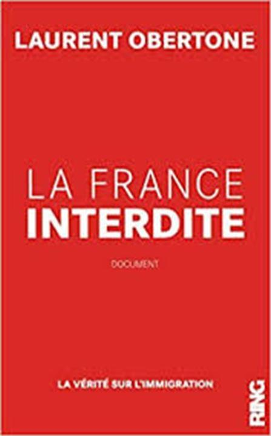
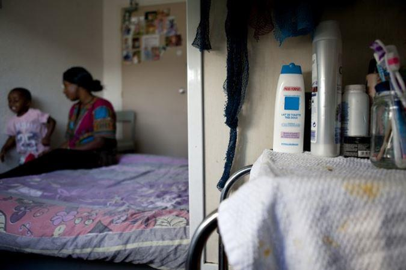
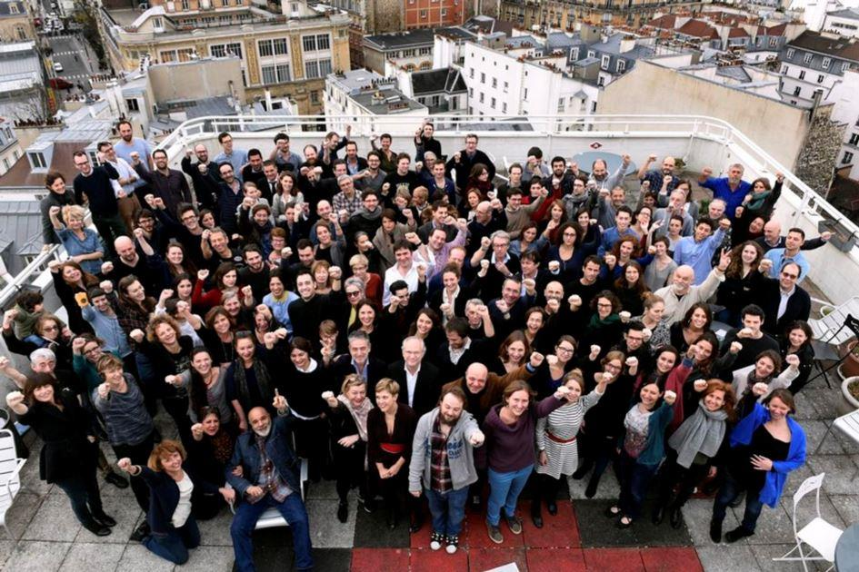

Le dernier livre de Laurent Obertone s'intitule La France interdite et porte en sous-titre « La vérité sur l'immigration » ; il a paru aux éditions Ring à l'automne 2018. C'est un document volumineux de plus de 500 pages, extrêmement documenté. Les sources sont nombreuses et toutes sont rigoureusement citées avec leurs dates de publication. L'auteur a opté pour un mode de rédaction semblable à celui des revues « scientifiques » certainement pour des raisons de prudence — quand on aborde certains sujets, les procès peuvent arriver rapidement- mais cela alourdit parfois la lecture.
À la page 339, pas moins de 8 études « scientifiques » sont citées en une seule note de bas de page !
Si l'Histoire est une accumulation de dates, de chiffres et de faits, la sociologie est une accumulation de chiffres, de statistiques et d'enquêtes. Y échapper est impossible. La première partie de l'ouvrage est un conglomérat d'études comparées, de statistiques et de variables jusqu'à saturation. Mais en contrepartie on y trouve des données rarement publiées ou rapidement mises sous le boisseau par la presse correcte. Et ces études sont parfois éclairantes sur le sujet de l'immigration et sur son coût, dont peu de journalistes parlent, pour ne pas dire aucun et jamais. On y apprend par exemple, à la page 65 que pour 2015 :
« 15 % de l'offre hôtelière en Région parisienne, la région le plus touristique du monde... »
...sont réservés aux demandeurs d'asile, aux réfugiés, aux immigrés, les vocables sont nombreux.
Effectivement la réservation de quelques 35 000 chambres occupées à l'année est un manque à gagner touristique et un coût payé par le SAMU social : 200 millions d'euros ! (Libération le 12/10/2015.) Ces chiffres éclairent le lecteur peu habitué à ce genre d'ouvrage.
Heureusement quelques traits d'humour et des bons mots de l'auteur viennent alléger le fardeau des courbes et des pourcentages peut-être un peu trop présents dans la première partie. « L'amicale de la diversité » revient à plusieurs reprises pour désigner les partis, les mouvements et les « communicants" pro-migrants, ceux qui aspirent à un « Nouvel ordre moral » p.433.
Car, lorsqu'il ne cite pas une étude et qu'il laisse aller sa plume au gré de son inspiration l'auteur sait nous divertir par des descriptifs réalistes, légers et amusants ; la page 240 est une peinture facétieuse de la description des vrais gens, du français périphérique :
« Il regarde la télévision, parfois même TF1, ne mange pas de baies de goji, ne connaît pas de lieu de vie "sympa", n’a jamais fait de "cure détox"[...] il n'a jamais envisagé d'arrêter le gluten, il connaît des obèses, sait se servir d'une tronçonneuse[...] il ignore qu'il est cisgenre binaire non fluide, et ça lui a fait quelque chose quand Johny est mort. [...] Il n'a jamais été ému par la profondeur d'une œuvre d'art moderne, ni porté de chemise sur mesure, ne connaît personnellement aucun comptable, annonceur, consultant... [...] »
Quelques formules sont imagées de façon agréable et criante de vérité :
« L'humanitarisme émotionnel est le cheval de Troie de l'immigration » p.89
Chacune de ces phrases se situe dans un chapitre amplement développé :
« Les faits s'envolent, la propagande reste. » p.283
« L'inégalité est un fait, l'égalité est un rêve. » p.317
Bien sûr on ne peut pas écrire un tel document sur l'immigration sans parler de politique migratoire et de politique tout court, même si ce n'est pas un scoop de nous dire que les musulmans votent à gauche, comme pour un vaccin, la piqûre de rappel reste indispensable :
« La Seine-Saint-Denis, dont la première religion est l'islam, est aussi le seul département où Mélenchon est arrivé en tête, avec plus de 34 % des voix. » p.211
L'auteur de Guérilla et de La France orange mécanique connaît bien le journalisme puisqu'il a fait l'école du journalisme de Lille. Il est donc bien placé pour citer ses « collègues » :
« En France, les grands médias donneurs de leçons comme Le Monde, Libération ou Médiapart n'emploient quasiment aucun journaliste noir. (Arrêt sur image, le 26/10/2015) » p.275

Une partie de la rédaction de «Libération» sur la terrasse du 11 rue Béranger à Paris, le 17 novembre 2015. Photo Marc Chaumeil pour Libération
Et d'en conclure en anticipant quelque peu par une formule lucide :
« Ceux qui prônent le vivre ensemble ont toujours les moyens de vivre séparés » p.216
Quelques réflexions philosophiques sur un bien qui a tendance à s'amenuiser en France, mais qui ne sera jamais un sujet de philo au bac :
« Quelle valeur a la liberté d'opinion si on n'a le choix qu'entre une opinion qui coûte et une opinion qui rapporte ? [...] Quelle valeur a la liberté si chacun en craint les conséquences ? » p.429
Car cette liberté, ce bien cher aux Français, non seulement s'amoindrit mais finira par disparaître totalement, Big Brother s'en charge :
« Tout ce qui fait de l'audience est contrôlé par Big Brother. Il a les moyens de vous faire taire. En 2013 la France représentait 87 % des demandes mondiales de censure de tweets (La Tribune le 07/02/2014), et a également battu le record mondial du nombre de contenus bloqués sur Facebook -37 990 en 2015, soit 452 fois plus que la Russie (JDN, le 12/05/2016) » p.437
Hé oui, 452 fois plus qu'en Russie, il s'agit bien de la Russie de l'ogre Poutine, non ? Nos « journalistes » objectifs du Ministère de la Vérité, les traqueurs de « fakenews » rétabliront la vérité vraie, il suffira de guetter les colonnes du Monde ou de Libération.
Mais Obertone à un gros défaut : il est né en 1984. L'année ou Big Brother s'empare des commandes et où la gauche tenait en mains les manettes du pouvoir. De la gauche il a retenu qu'il « ne faut pas désespérer Billancourt ». Lui, ne veut pas désespérer les gilets jaunes des ronds-points que, par touches légères et à peine perceptibles on sent poindre sous sa plume :
« Il faut réveiller le somnambule. Surtout s'il marche vers la fenêtre. » p.455
Sans qu'il ne nous le dise on sent bien quand même que quelque chose ne va pas dans la quantité infinitésimale d'espoir qu'il voudrait faire naître parfois dans son ouvrage. La France est le pays des paradoxes statistiques : 75 % des français partagent nombre d'idées de Marine le Pen, mais 75 % des français votent contre Marine le Pen !
Obertone non plus n'a pas la réponse :
« Pourquoi avons-nous démissionné ? Est-ce le conditionnement, ou est-ce notre délitement ? Le Diable seul le sait. » p.457
Jean-Marie le Pen ne le dit pas autrement dans ses Mémoires :
« Méritons-nous de survivre ? Je l’ignore. Si nous croyons que la question a un sens, c’est que nous nous référons à un jugement supérieur à nous. Pouvons-nous perdurer ? Je l’ignore aussi. L’événement le dira. »
Car, après nous avoir assené la vérité incontournable des chiffres et des faits, après nous avoir démontré que le tissu humain de la nation est changé, c'est sur une note d'espoir que se termine l'ouvrage d'Obertone :
« Cet avenir qu'on prétend nous interdire, la France, de nouveau va devoir le conquérir. » p.458
Dans Le suicide français, Éric Zemmour termine son livre par cette phrase terrible :
« La France se meurt, la France est morte. »
Obertone parle assez souvent de testostérone dans ses ouvrages, pour noter que chez l'homme blanc elle est en récession. Sa production s'amenuise également avec l'âge, c'est une vérité biologique incontournable : Zemmour en produit certainement moins qu'Obertone. Zemmour a été de la dernière génération de français éduqués à la communale et à avoir vu les derniers bienfaits de l'électrification. Obertone a connu la transition entre la 3G et la 4G. Nous n'allons pas rentrer dans une querelle des anciens et des modernes. Mais il est moins difficile pour des gens qui ont la plus grande partie de leur vie derrière eux, d'accepter que les choses soient foutues définitivement ; pour un être jeune la chose est certainement plus difficile. S'il n'y avait que ça qui mériterait d'être débattu ce serait dérisoire... Puisse Laurent Obertone avoir raison.
Jeune ou vieux on se doit de lire La France interdite pour deux raisons principales :
L'importante source de sa documentation et la plume acérée de l'auteur qui progresse d'ouvrage en ouvrage.
Partager cette page